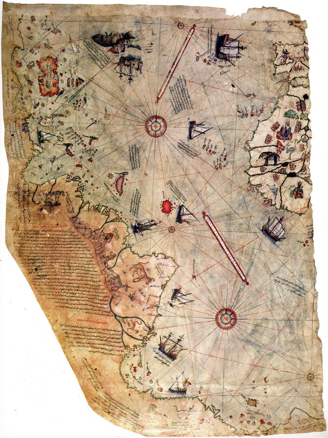
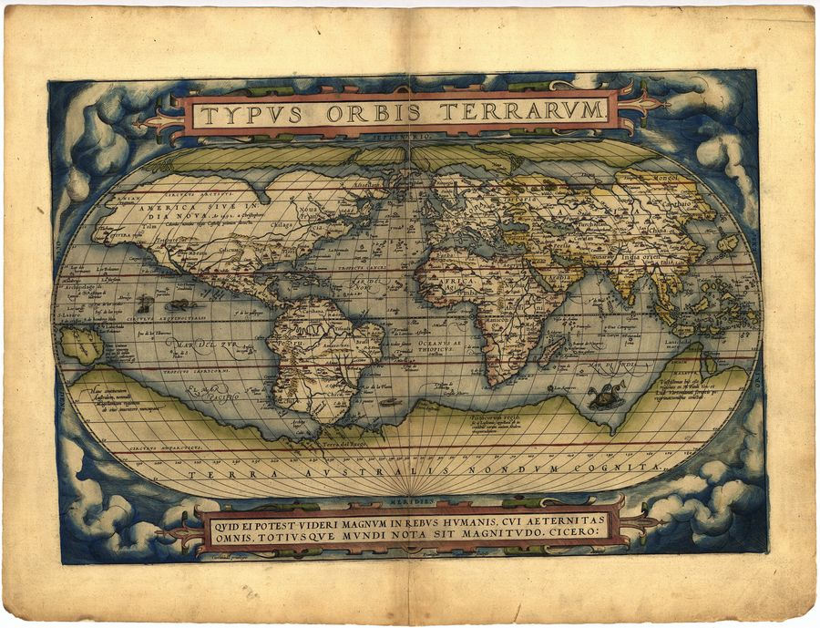
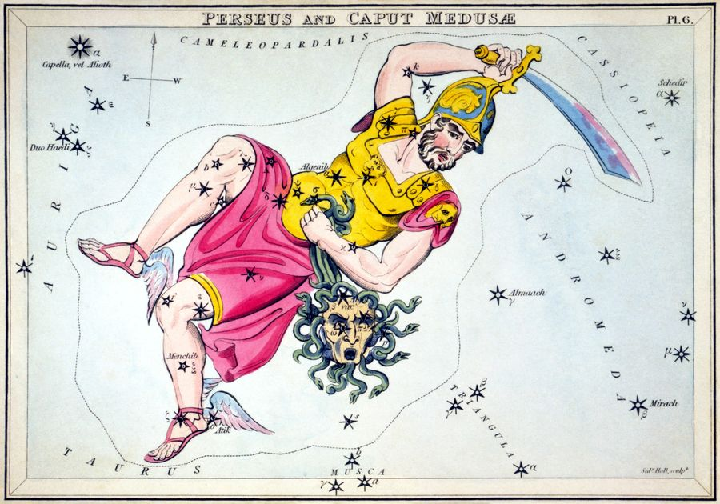
Thirteen maps that know too much. A coastline charted before the ice sealed it. A black mountain at the North Pole, drawn by the most trusted cartographer who ever lived. The road timetable of the Roman Empire. Each one restored from a museum scan and ready to print up to 24 inches.
Every map comes in five print-ready formats: native aspect at full resolution, plus pre-fitted 2:3, 3:4, 4:5 and ISO versions for standard frames from 8x10 to 24x36. Sourced from museum and library scans, every one verified public domain, restored without repainting. The age is the point. And the Map Briefings PDF gives you the story behind each chart, so the map on your wall comes with the mystery attached.
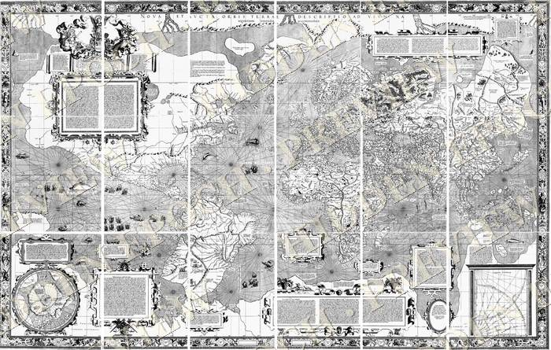
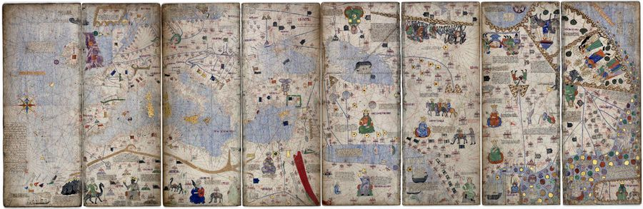
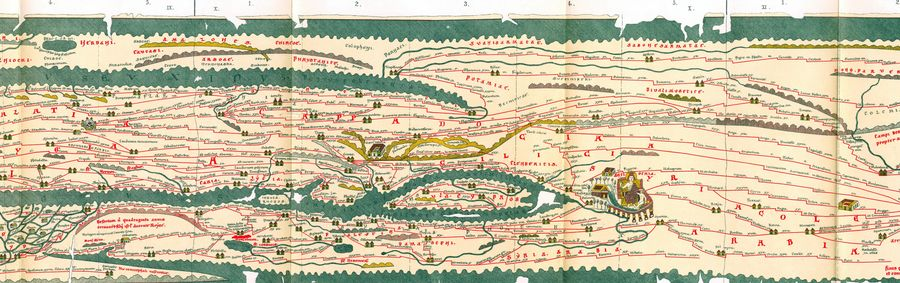
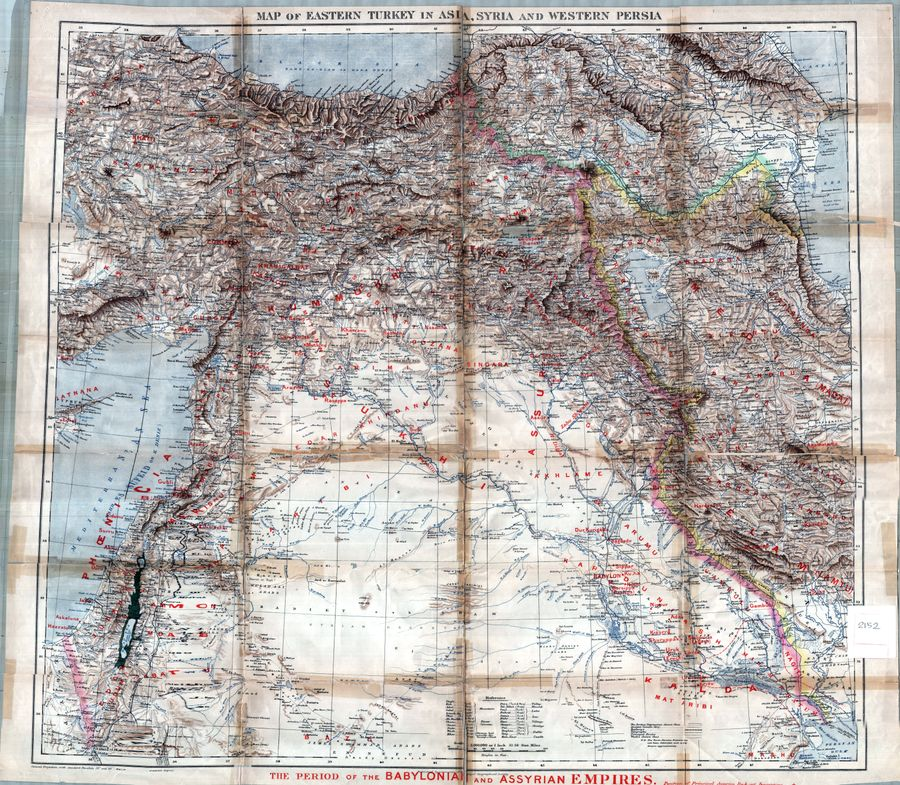
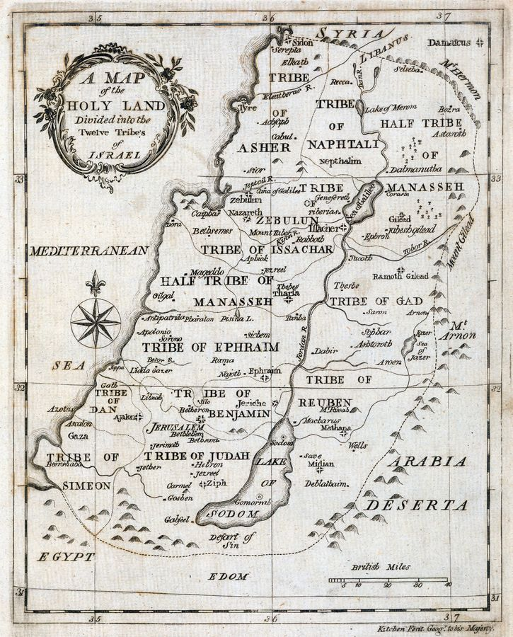
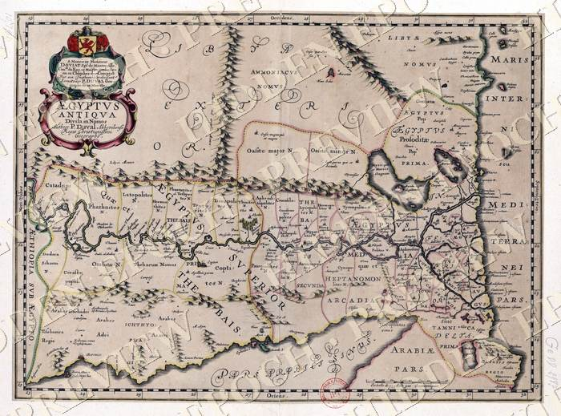
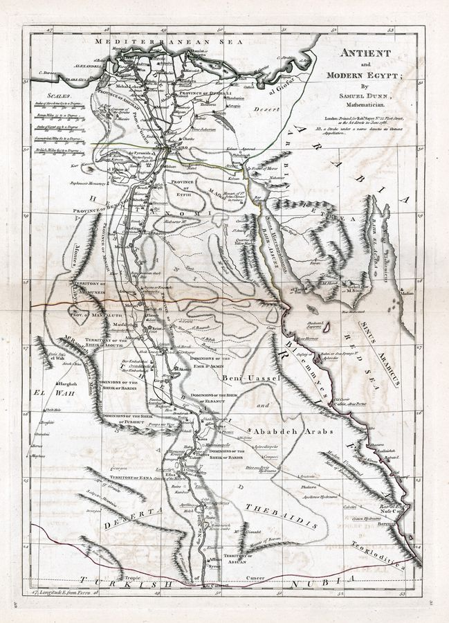
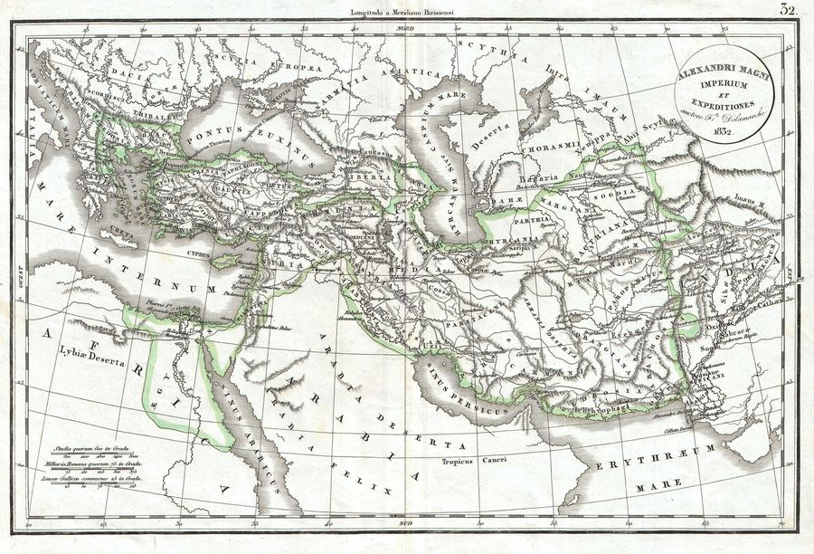
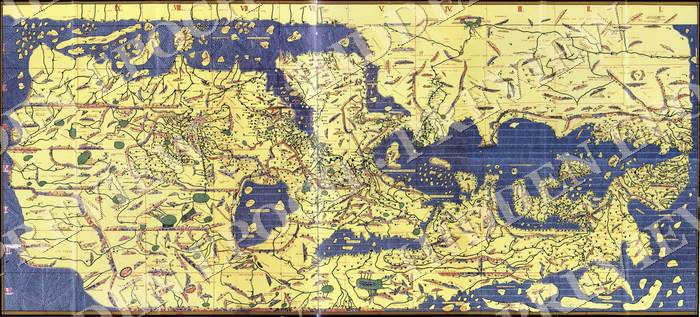
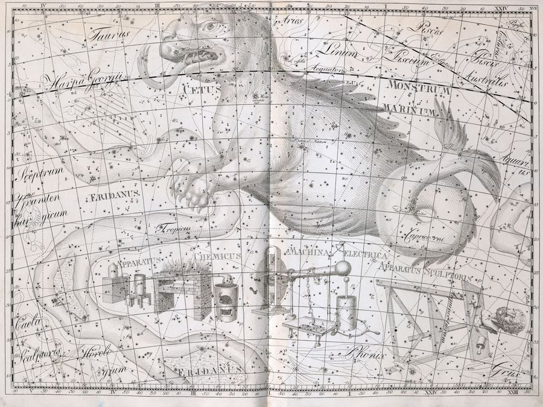
A map is a confession. It records exactly what its maker knew, and the moment a map knows something its century should not have known, you have evidence you can hang on a wall. Piri Reis told us himself that he copied older charts. Mercator put a black mountain at the pole because his sources described one. The portolan charts appear in history fully formed, with no crude ancestors. Nobody has explained where that skill came from. These are not decorations. They are documents, and every one of them is an open case.
$9. One-time payment. Instant delivery to your email. 13 maps, 65 print-ready files, the Map Briefings PDF, and every map's source and rights sheet. Personal license.
Stripe · Card or Apple Pay · Delivered in 60 seconds · Yours to keep
A link to your private download page. It holds 13 ZIP files, one per map, each with five print-ready JPGs and a source sheet, plus the Map Briefings PDF. The page is yours permanently and the links do not expire.
Every map is at least 1800 pixels on the long edge and most are far larger, up to 7200 pixels, which is 24 inches at full 300 DPI print quality. Each ZIP includes pre-fitted files for standard frames: 8x10, 12x18, 16x20, 18x24, 24x36, and ISO sizes A4 through A1.
Museum and library scans: the Library of Congress, the New York Public Library, national libraries, and institutional archives. Every map is verified public domain, and its exact source and rights statement is included in its ZIP. The restoration touches contrast only. Nothing is repainted, because the age is the product.
The license is personal: print them for your home, office, or as gifts. Reselling the files or prints is not permitted.
An independent investigations project covering ancient anomalies, suppressed archaeology, and the maps, texts and monuments that do not fit the timeline. Daily on YouTube, Instagram, and TikTok. Editorial voice: Jordan Vale.
13 maps. 65 print files. The briefing that tells you what each one should not have known. Nine dollars.
Get The Collection